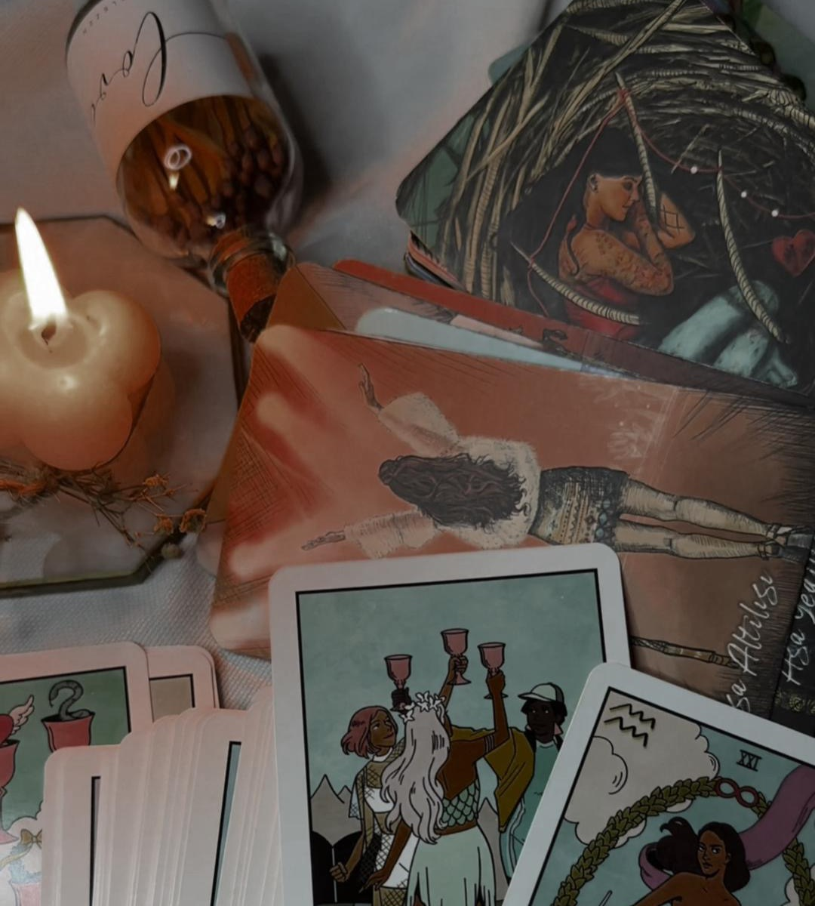
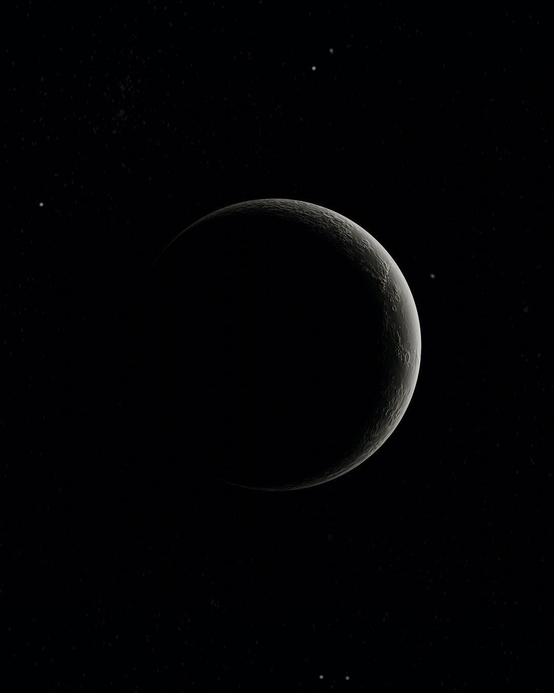

Стандартный разбор на Таро
10 000 ₽
В рамках разбора рассматриваем ваш основной запрос и связанные с ним вопросы.
ТароМатрица судьбы
В работе со мной вы находитесь в поле абсолютной приватности
01 консультации

10 000 ₽
В рамках разбора рассматриваем ваш основной запрос и связанные с ним вопросы.
30 000 ₽
Подходит для объемных и многослойных запросов, которые требуют более подробного анализа и не помещаются в формат стандартного разбора. В разбор можно включить несколько связанных между собой тем/сфер.
18 000 ₽
Доступна только для Стандартного разбора. Для тех, кому важно получить разбор в сжатые сроки. Количество слотов ограничено.
Заказать любой разбор

02 предназначение
В рамках разбора предназначения мы рассматриваем:
Врождённые качества, сильные стороны и то, через что вы можете реализовываться естественно
Есть ли в роду ресурсы, которые вы можете раскрыть, а также есть ли защита и поддержка со стороны рода или высших сил
Чем занималась ваша душа ранее, как вы уже реализовывали свои таланты, через что приходили деньги и какие навыки уже усилены
Через какие сферы деятельности и форматы у вас раскрывается денежный поток в этом воплощении
Куда сейчас важно двигаться, чтобы прийти к реализации и усилить свой путь (в кратком формате)